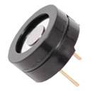
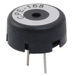

Un buzzer o zumbador es un componente electromagnético o piezoeléctrico que emite ondas de sonido. Estos buzzers deben de ser controlados por medio de un circuito electrónico oscilatorio o alguna otra fuente de audio.
Cuando se evalúa un buzzer hay cuatro parámetros principales sobre los que nos debemos de preocupar:
Los buzzers se pueden categorizar por características en categorías como:
Existen diferentes tipos de buzzer, pero los dos tipos principales son el magnético y el piezo
Características del Buzzer Piezo:
Características del Buzzer Magnético:
El corazón de los buzzers de tipo piezo se encuentra en el elemento piezoeléctrico. El elemento piezoeléctrico está compuesto por una cerámica piezoeléctrica y una placa de metal unida con adhesivo. Ambos lados de la placa de cerámica piezoeléctrica contienen un electrodo para la conducción eléctrica. Los materiales piezoeléctricos exhiben un fenómeno específico conocido como el efecto piezoeléctrico y el efecto piezoeléctrico inverso. La exposición a una tensión mecánica hará que el material desarrolle un campo eléctrico, y viceversa.
Cuando se aplica una tensión alterna al elemento piezocerámico, el elemento se extiende y contrae diametralmente. Esta característica del material piezoeléctrico se utiliza para hacer que la placa de cerámica vibre rápidamente para generar ondas de sonido.
Hay dos tipos de buzzers piezoeléctricos: transductores e indicadores. Los transductores consisten en una carcasa, un elemento piezocerámico y una terminal. Para operar un transductor, el usuario debe enviar una señal de onda cuadrada al zumbador. Los indicadores consisten en una carcasa, un elemento piezocerámico, una placa de circuito y una terminal. Para operar un indicador, el usuario debe enviar al zumbador un voltaje de CC específico.
El disco vibrante en un buzzer magnético es atraído hacia el polo por el campo magnético. Cuando una señal oscilante se mueve a través de la bobina, produce un campo magnético fluctuante que hace vibrar el disco a una frecuencia igual a la de la señal conductora.
| No. | Nombre |
|---|---|
| 1 | Carcasa |
| 2 | Peso vibratorio |
| 3 | Cavidad |
| 4 | Disco vibratorio |
| 5 | Imán |
| 6 | Polo |
| 7 | Bobina |
| 8 | Placa de yugo |
| 9 | PCB |
| 10 | Transistor |
| 11 | Epoxy |
| 12 | Pin |
Esta ilustración resalta la estructura de un buzzers magnético típico. Al igual que la tecnología piezoeléctrica, los buzzers magnéticos están disponibles en transductores y configuraciones de indicadores. En un buzzer magnético, el transistor actúa como el circuito de conducción. Los indicadores incluyen el transistor, creando un tono cuando se aplica un voltaje de cd. Los transductores carecen de este transistor, que requiere una señal de onda cuadrada para funcionar correctamente.
En la mayoría de estas aplicaciones el buzzer se utiliza para enviar mensajes simples al usuario, como la finalización de un trabajo, el el paso de un tiempo definido o la validez de las entradas del usuario.
Para ver el ejemplo pueden escanear el código QR o escribir esta dirección en sus navegadores:
Basandose en el código de ejemplo, van a hacer un programa que toque una melodía con las siguientes notas:
C - G# - G - F - F - G# - F - F - D# - F -PAUSA- G# - F - D# - C
Para darnos una idea de como debe de sonar la melodía, podemos checar el siguiente video.